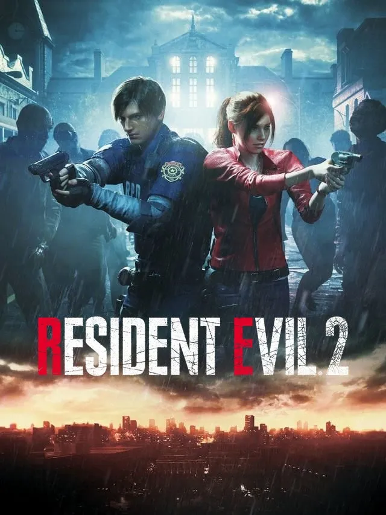

- Desarrollador: Capcom
- Lanzamiento: Enero de 2019
- Género: Survival horror
- Plataformas: PC, PS4, Xbox One
Resident Evil 2 Remake es la reimaginación del clásico de 1998, desarrollada y publicada por Capcom en enero de 2019. Es un survival horror en el que cada bala cuenta.
Controlas a Leon S. Kennedy y a Claire Redfield en plena crisis zombi. Destaca por su apartado gráfico con el motor RE Engine.
Considerado por muchos uno de los mejores remakes de la historia de los videojuegos.